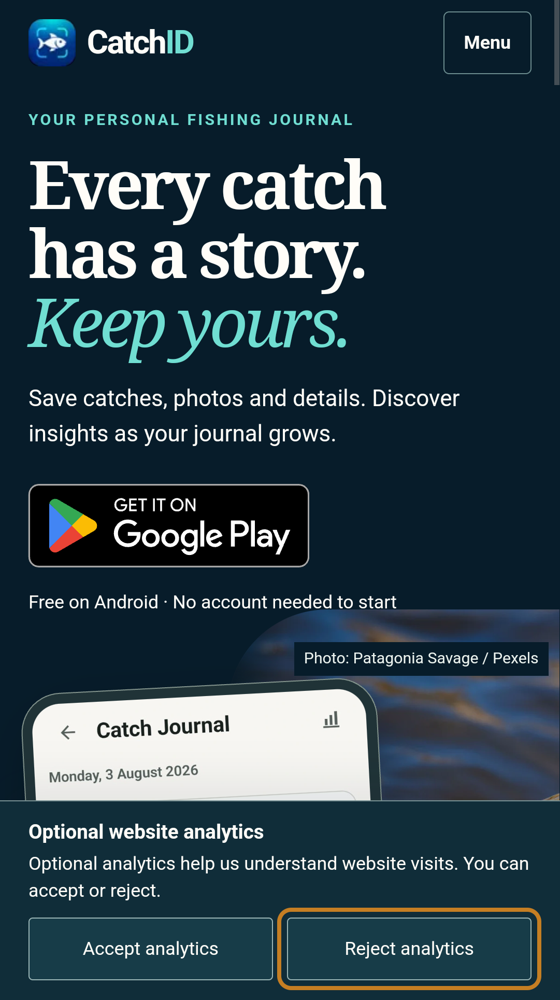
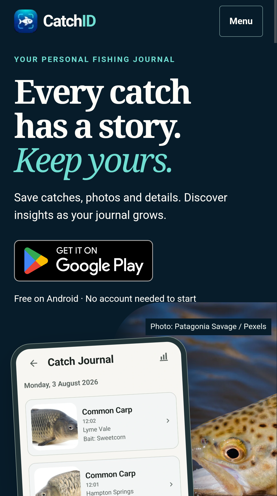
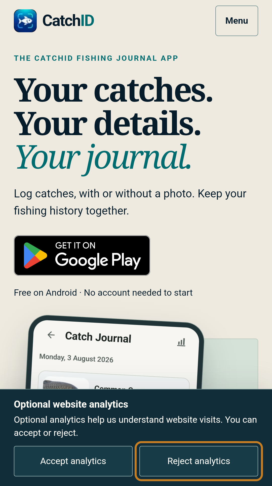
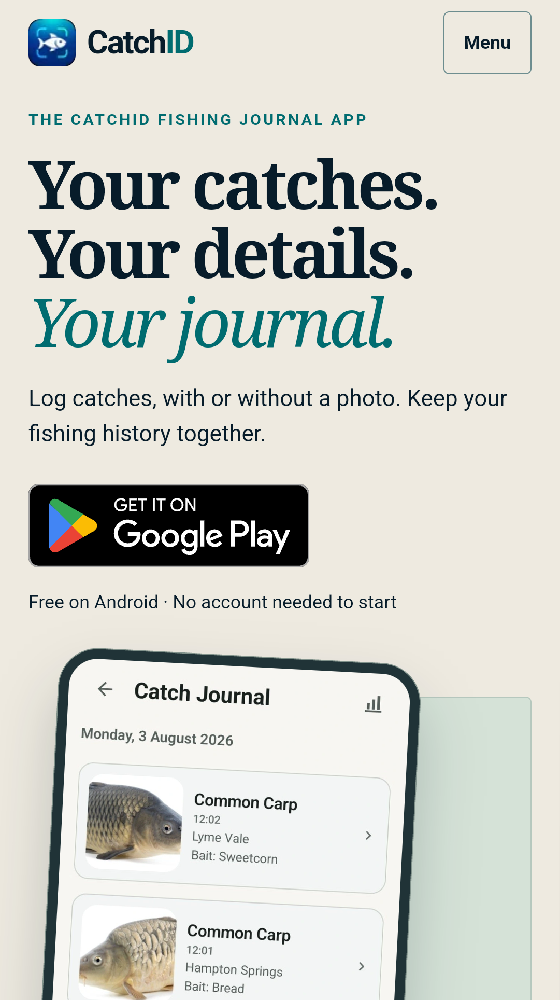
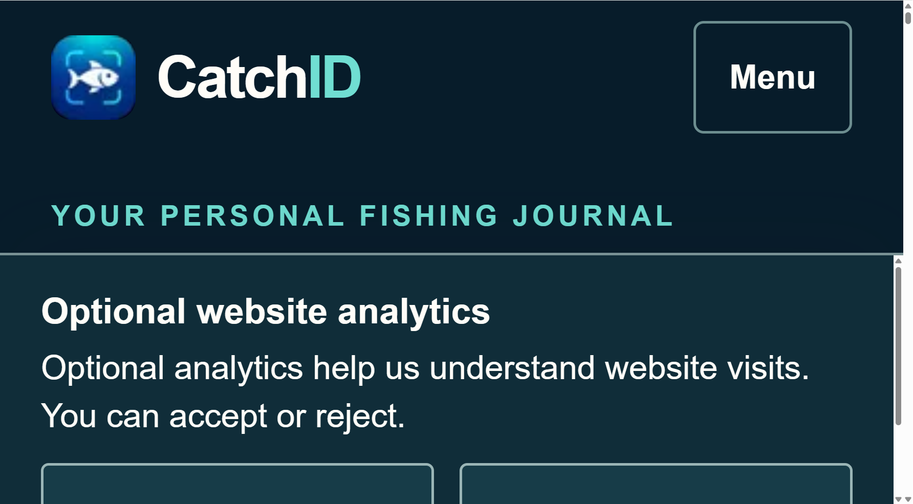
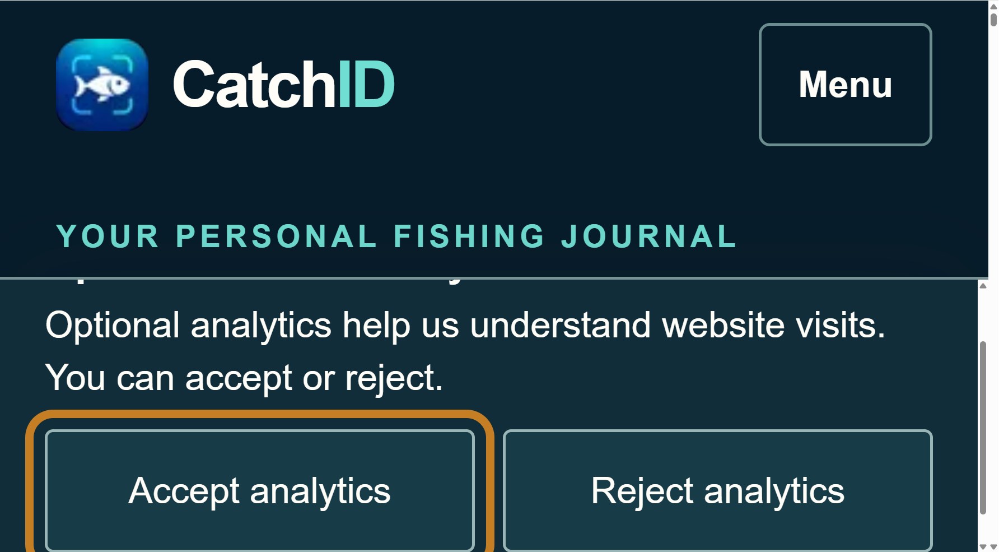
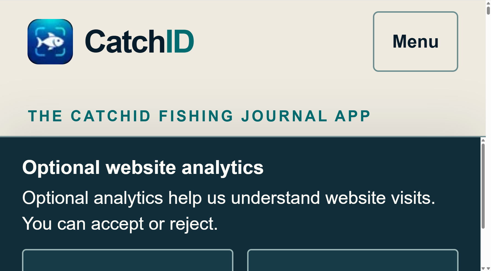
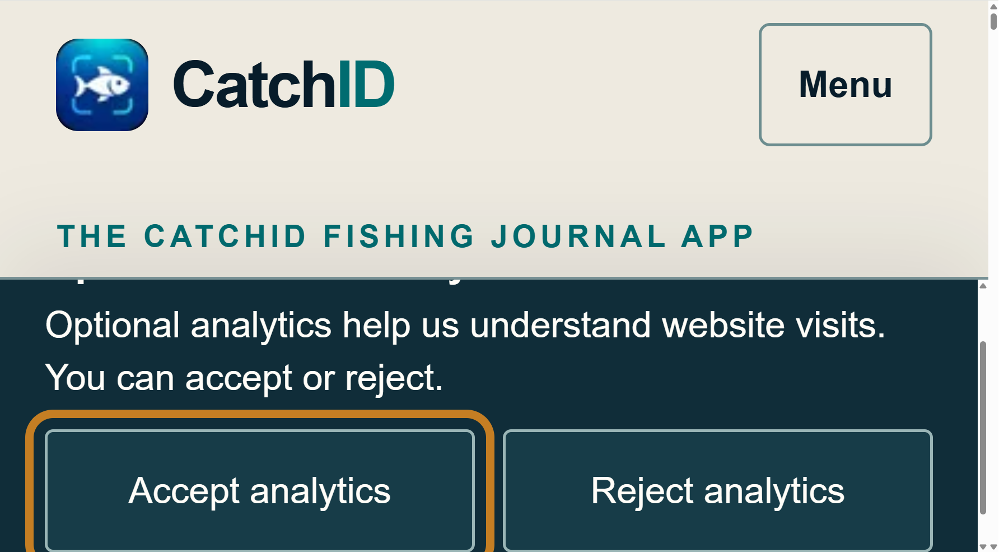

CRO-11 — CONDITIONAL GO / NOT LIVE
20 November 2026. Offline evidence only. Exact approved CRO-10 implementation; no redesign or publication. Linux preflight and explicit owner acceptance of remaining untested coverage precede separate publication authority.
Actual Android Chrome — emulator, not physical device
Preinstalled Chrome 124, Android 15/API 35, 393×701 CSS viewport. Browser-rendered original PNGs; click for full size. No app installations, accounts or real analytics.








Full pages: Homepage · Fishing Journal · Assertions


Actual desktop browser zoom — 400%
Native UI zoom, 356×197 CSS viewport. The consent panel scrolls vertically; focus reveals complete controls. The bottom ring edge can meet the scroll boundary. These settled compositor screenshots show the actual viewport; the default clipped diagnostic zoom captures are not used for visual acceptance.








Native 200% results · Native 400% results · Approved CRO-10 before/after focus gallery
No actual Safari, physical-device or spoken screen-reader pass is claimed. Linux was unavailable. See the reports for precise qualifications, initial failed checks and the minimum final acceptance procedure.